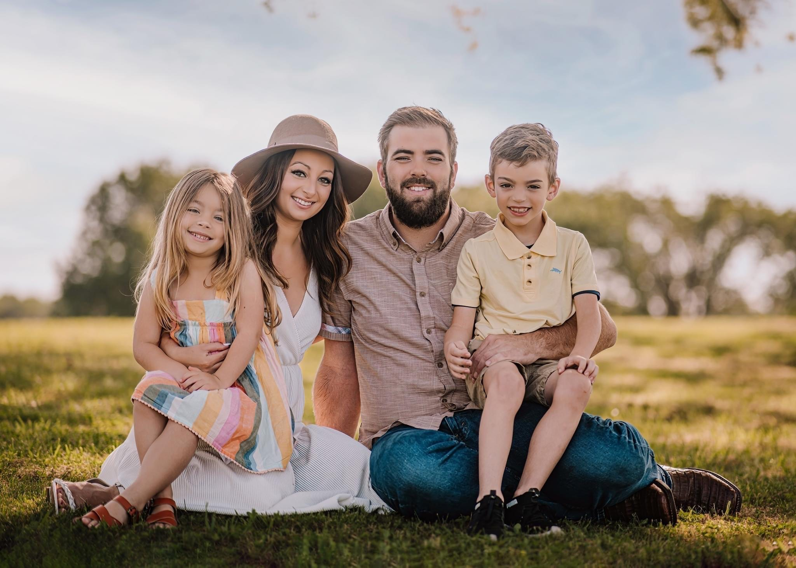
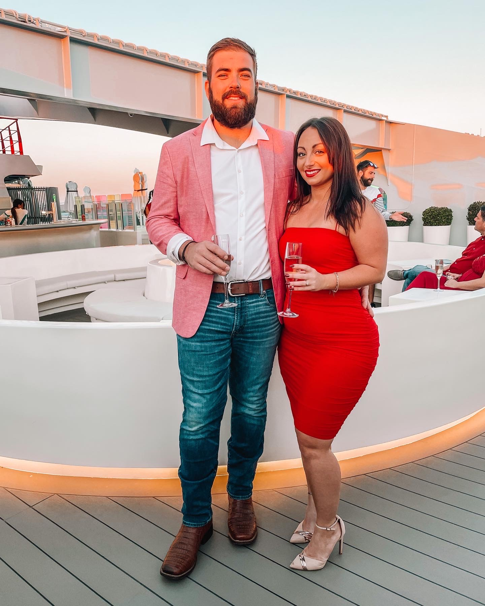

Let's start with the most important thing in my life, my family. My husband's name is Blake, and we have 2 children: Noah and Isabella. We love to go boating together on the weekends, and have enjoyed learning to wakesurf and wakeboard all summer.
We can't forget about Bodi. This is our 2-year-old German Shephard. He is super loving, loyal, and goofy. He makes a great life guard when people are in the pool. He also loves to run really fast, tear up the yard, and bring the Georgia clay into the house. He can be a pain the in butt, but we love him to death.
We love to travel and have been on 3 cruises this year. As a family, we traveled once this year to the Bahamas with Royal Carribean. Blake and I have also been on 2 cruises with Virgin Voyages this year together, once to the Bahamas and once to Dominican Republic. Family travel plans are still up in the air for next year. Bella wants to go to Disney.... Noah requested Paris!
 The majority of my background is in healthcare, as I worked for over
13 years for a retirement community in PA. I started working as a dietary aide, and worked my way through many
roles including a nurse, and eventually the Nursing Home Administrator. I also worked as a real estate agent on the side.
After moving to Georgia, I decided to take a break to focus on our family and our adjustment to a new state.
I still worked part-time in real estate and also began posting on social media, which quickly grew and I became a "content creator."
It's been fun, and I've been able to work with many brands. I actually partnered with Virgin Voyages,
which is how we traveled with them twice this year. I also started with my friend called "The Pretty Awkward Podcast."
Fast forward to now, where I've started a software engineering bootcamp program with Coding Temple. I have enjoyed learning
being challenged so far, and aspire to obtain a position as a software engineer
in the near future.